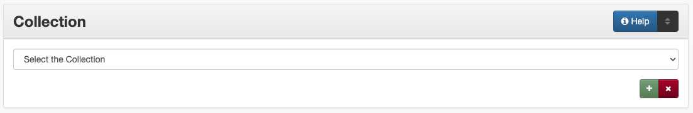

Collection
Definition
Collection refers to a larger group of resources with a unique collective title to which the resource being described belongs.
Where Can the Collection Information be Found?
This information comes from the institution or from the project manager.
How Collection Works in the Metadata Form
- Parts:
Collection name – drop-down menu
- Repeatable?
Yes - to include multiple collections, click ‘Add’ to repeat the field
- Required?
Yes (more information)
How Should the Collection be Filled in?
Select the correct collection name from the controlled vocabulary
When relevant, include multiple collections
It is important that the correct collection name(s) be entered for the item
Examples
- Photograph: Perini Well #1 Coming In
Collection: ABPHC - Abilene Photograph Collection
- Rare book: Rhymes, for infant minds
Collection: UNTRB - Rare Book and Texana Collections
- Pamphlet: Control of sugar-beet nematode by crop rotation.
Collection: ATOZ - Government Documents A to Z Digitization Project
Collection: USDAFB - USDA Farmers’ Bulletins
- 1936 General Highway Map of Bosque County, Texas
Collection: SG07 - Rescuing Texas History, 2007
- Music USA Recording Schedule, 1962-1973
Collection: MLCC - Music Library Conover Collection
- Newspaper issue: The Caldwell News and the Burleson County Ledger (Caldwell, Tex.), Vol. 64, No. 45, Ed. 1 Friday, June 8, 1951
Collection: TDNP - Texas Digital Newspaper Program
Collection: CNBCL - Caldwell News and Burleson County Ledger:
Collection: TFG - Tocker Foundation Grant
Resources
UNT Collections Controlled Vocabulary
More Guidelines:
Comments
Collections are determined based on a large group of related items, intended to facilitate browsing, such as:
Topical groupings
Historic events
Serial sets – especially full runs of a publication during which the title changes
Projects sponsored by a grant or special funding
In some cases, all items from one institution may also belong to a single collection; however, large, distinctive groups may have their own collection
Although some archival collections may have a corresponding “collection,” small collections or archival series may also be represented as series titles